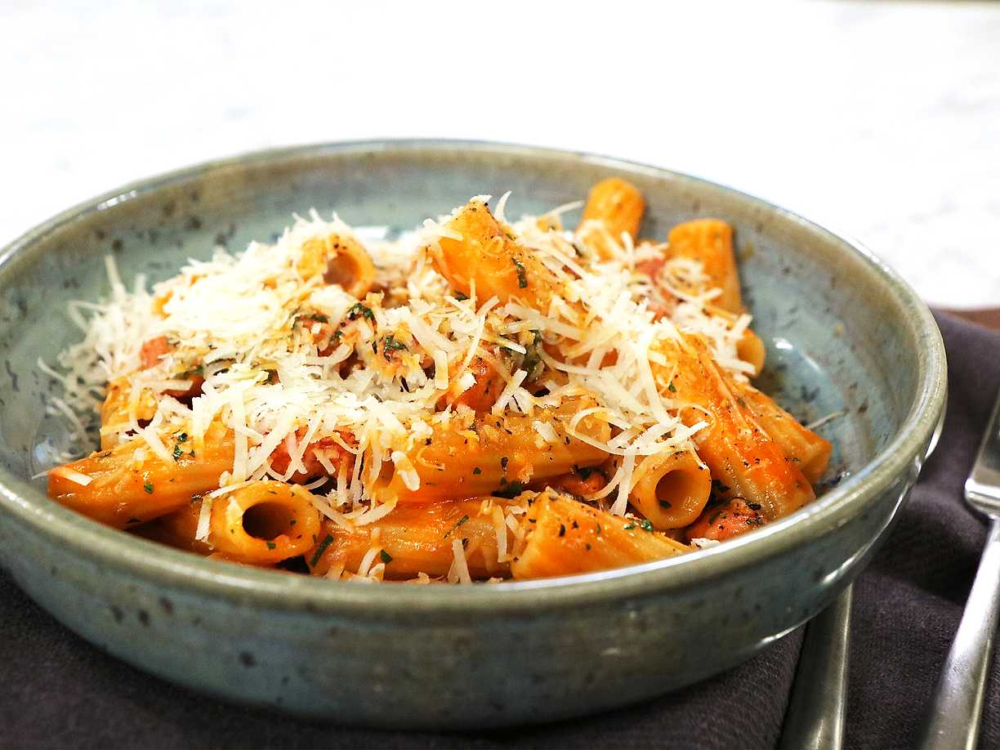

Salsiccia Pasta

Description
Ingredients
- Salsiccia Sausage
- garlic
- tomato paste
- Mezze Maniche or other pasta of your liking
- Cream
- Salt and pepper
Cooking
- Chop the garlic and add them to a small bowl
- Cut the sausages open and get all the meat out of the sausages
- Bring you water to a boil. Proceed with the next step and just add salt and pasta when the water starts boiling
- Add your salsiccia to a medium-heated pan
- As the fat starts melting, bring the heat up
- As the salsiccia gets done, add some tomato paste (straight to the pan, not in the salsiccia)
- Stir fry and then add the Cream
- Let that simmer and then mix togheter the pastsa with your salissica.
- ENJOY
Looking for more recipes? Return to the front page